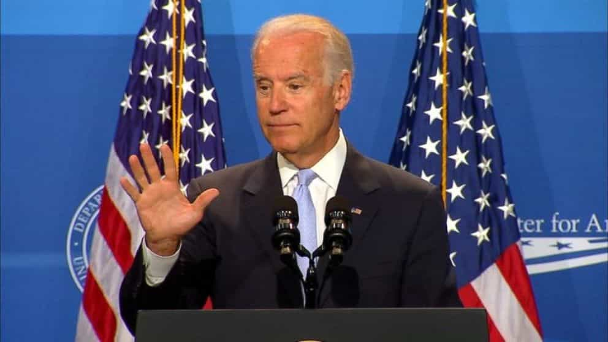

When people call all or most politicians evil, I’m always incredulous. No matter whether they are the nationalists I love or the SJWs I hate, the vast majority of them are either puppets or non-powerful, albeit brave contrarians. By and large, they have next to no influence and, in the case of the SJWs especially, can be crushed by their overlords. Some political figures (Donald Trump, Congressman Greg Gianforte, etc.) are certainly extremely wealthy and have much more leeway to be themselves, yet most rely on rich benefactors and are always fearful of losing their jobs.
In the United States, Congressmen in particular are slaves to their rather ridiculous two-year terms. From the day they first take office and then every time they are reelected, those sitting in the House of Representatives are immediately canvassing support for their next appearance on an electoral ballot. They have to worry about their own personal finances, campaign finances, primaries against members of their own party, and then a general election.
Remember, Congressmen and Senators are paid under $200,000 per annum. It may sound like a lot, but when the rigors of the job and much higher private sector executive salaries are considered, it’s a pittance. What’s more, obtaining a seat in the House costs around $2 million nowadays and a Senate seat will set you back around $10 million. Candidates have to reach out to others and this invariably involves whoring themselves out for some cash or, alternatively, other forms of political influence.
Because politicians need to mingle in wealthy circles to attract fundraising dollars, the idea of a Congressional salary leading to a comfortable financial life is very overblown. A Congressman or Senator is often far poorer than those he or she is soliciting checks from and must spend a lot just to socialize around these people. It’s even worse for aspirants who haven’t yet obtained political office. Most folks vying for House and Senate seats are at the mercy of those capable of bankrolling their campaigns.
I am not defending the worst kinds of political prostitution, but a certain level of whoring is just part and parcel of political systems in the West. Multimillionaire politicians like Democrat and former House speaker Nancy Pelosi are arguably beholden to those with hundreds of millions or billions of dollars as well.
Politicians are grossly underpaid, regardless of how much we hate them

As a Senator, former Vice President Joe Biden was one of the poorest politicians in Washington. One must wonder how this affected his policies and how much political whoring he would have had to engage in.
Consider that politicians have next to no quality of life much of the time. Yes, they chose to get into the game. But few people anywhere really understand the hours and constant favors that politicians must put in every month and year without fail. If an incumbent politician loses a tight election race, they don’t have a job afterwards. Maybe they will set up a subsequent career in lobbying, an almost identical category of whoring, except this time it’s officially in the private sector.
When I was growing up, I knew one of the Australian House of Representatives members fairly well. He was a socialist, though personable and definitely hardworking. In fact, too hardworking. His life was a revolving door of appearances at elementary and high schools, banal awards ceremonies, party meetings across multiple suburbs in his district (so his fellow socialists wouldn’t decide to back his primary rivals), and other instances of non-stop political campaigning.
Then there was the whoring to businessmen he had to engage in. Socialist or not, he had to court local business elites, men who were usually supporting the laissez-faire conservatives but threw money into Labor Party coffers, too, so that any future leftwing government wouldn’t be so radical in wealth redistribution.
We should not see Donald Trump’s 2016 Presidential campaign, which involved Trump’s own money and many, many smaller donations, as some kind of permanent game-changer. Political whoring and an associated dependency on big business is not going to stop for any political organization. For example, the rise of the Tea Party some years ago has been unsustainable principally because establishment, non-conservative Republican candidates have access to the bigger checkbooks of their donors.
Let’s be frank: traditionalist politicians who are popular at the grassroots level are rarely going to succeed in the current environment. Men like Roy Moore may buck the trend and effectively stick their middle fingers up at the media and political apparatchiks, but sheer dollar power still counts for a lot.
“Hate the game, not the player”
Your Senator or Congressman at last week’s fundraising dinner.
We usually see this phrase in relation to getting girls and the sexual marketplace, but in some ways it’s equally or more applicable to the world of politics. As I said, some political actions–support for mass migration, Democrats continually letting black communities kill each other, etc.–are plain inexcusable. That said, so much of what we deplore in today’s society would happen with or without the current cohort of national and state politicians. They are oftentimes only servants of people higher up in the food chain.
Perhaps the answer is campaign finance reform. Perhaps it’s higher salaries for politicians, however much such a proposal would give me more money to leftwing politicians. Whatever the solution is, political whoring is here to stay until we substantially revamp the system. Politicians can be stupid or evil, but more than anything else they are just powerless.
Read More: 6 Most Corrupt And Vile Female Politicians